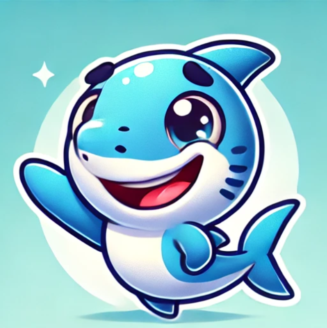
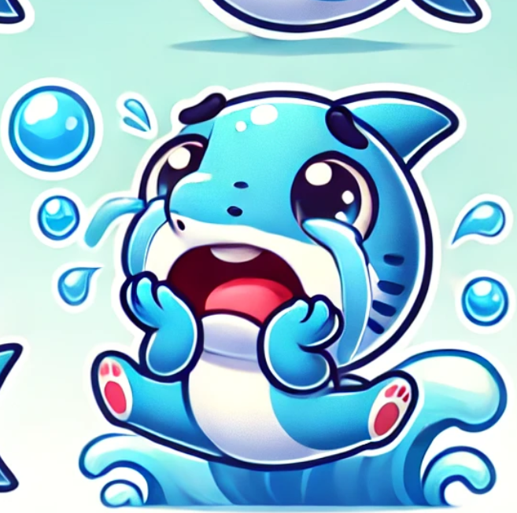

Pêche Intensive → Une Pratique Dévastatrice
Le savais-tu ?

Équilibre Marin
Une pêche durable, pratiquée de manière responsable, contribue à maintenir les stocks de poissons et protège les écosystèmes marins. De cette manière, l'équilibre des océans est préservé, et les espèces marines peuvent se renouveler naturellement, assurant ainsi la biodiversité marine et la santé des océans pour les générations futures.
Une mer saine, c'est essentiel !

Impact de la Pêche Intensive
La pêche intensive entraîne une destruction massive des habitats marins. L'utilisation de techniques comme le chalutage de fond dévaste les fonds marins et détruit les récifs coralliens, essentiels pour la survie de nombreuses espèces. La surpêche réduit considérablement les populations de poissons, menaçant la sécurité alimentaire mondiale et perturbant les écosystèmes marins.
C'est catastrophique...
